请仔细观察下图中的帕斯卡三角形（Pascal’s triangle）：
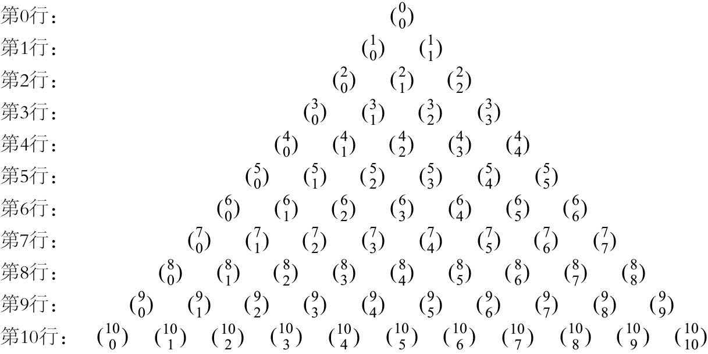
我们在本书第1章学过，把数字排列成三角形就会表现出一些有趣的规律。本章讨论的数字
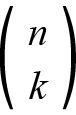
排列成三角形时，也会形成非常美丽的规律。这个三角形被称为帕斯卡三角形，如上图所示。利用公式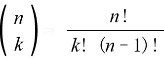
，我们可以把上图中的符号变成数字，如下图所示，然后寻找其中的规律。本章将对大多数规律做出解释，但你在第一遍阅读时尽可以略过不读，只要了解它有哪些规律即可。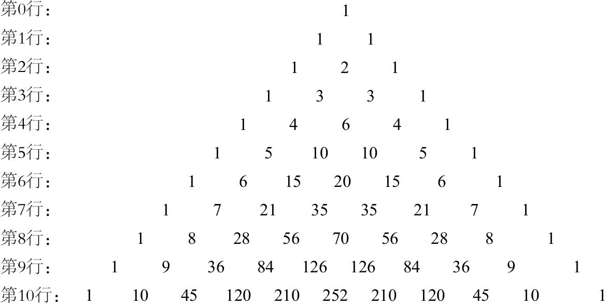
在用符号表示的帕斯卡三角形中，第0行只有一项，即
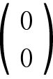
= 1。（记住，0! = 1。）在用数字表示的帕斯卡三角形中，由于所有行的第一项和最后一项都是1，因此：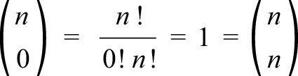
请认真观察第5行：
第5行：1 5 10 10 5 1
注意，第二项是5。一般而言，第n行的第2项是n。这是有道理的，因为
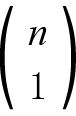
这个数字表示从n个对象中选取1个的方案数量，它的值等于n。还请注意，这个三角形的每一行都对称：从左至右看与从右至左看是一样的。例如，第5行中有：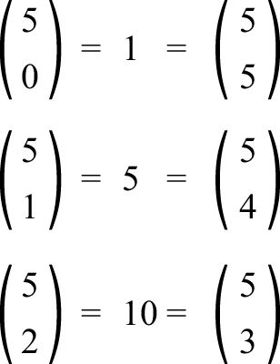
这个规律的一般表达式为：
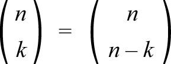
有两个方法可以证明这种对称关系。根据公式，我们可以进行代数证明：
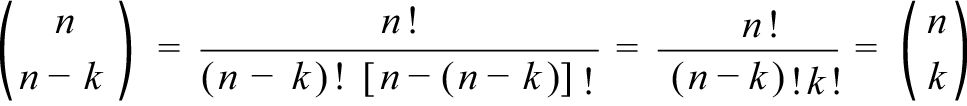
但是，无须借助公式，我们也能理解其中的道理。例如，为什么
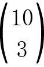
=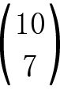
呢？数字表示（从10种口味的冰激凌中）选择3种口味的冰激凌放到一个杯子里，这同时意味着有7种口味的冰激凌不会被放到杯子里，两者是一回事。你也许还看出了另外一个规律：各行中的所有数字，除去开头和结尾的那些1以外，都是其正上方的两个数字之和。我们把这个令人惊讶不已的关系称作“帕斯卡恒等式”（Pascal’s identity）。例如，观察帕斯卡三角形的第9行和第10行：
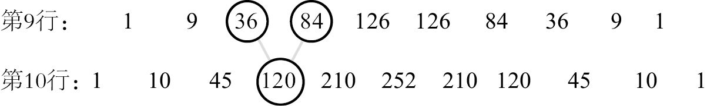
这是为什么呢？既然120 = 36 + 84，那么换成计数问题，这个等式就变成以下形式：
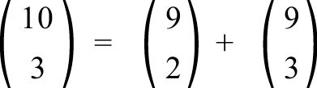
为了理解其中的道理，我们先来思考这个问题：如果一家商店出售10种口味的冰激凌，你要买一个包含3种不同口味的圆筒冰激凌（口味的次序不重要），会有多少种选择呢？第一种答案是我们已经知道的：。但是，我们还可以换一个方法解决这个问题。假设其中一种口味是香草味，那么不含香草味的圆筒冰激凌有多少种呢？答案是
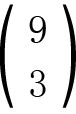
，因为我们可以在剩下的9种口味中任意选择3种。含有香草味的圆筒冰激凌有多少种呢？如果香草味是必选口味，那么其余两种口味有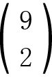
种可选方案。因此，一共有+种选择。哪个答案是正确的呢？两个方法的逻辑都正确，因此两个答案都正确，也就是说它们的值是相同的。同理（如果你愿意，也可采用代数方法），对于0~n中的任意数k，下列公式都是成立的：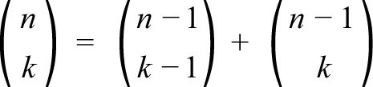
接下来，我们把帕斯卡三角形中各行的数字分别相加（如下图所示），观察其中的规律。
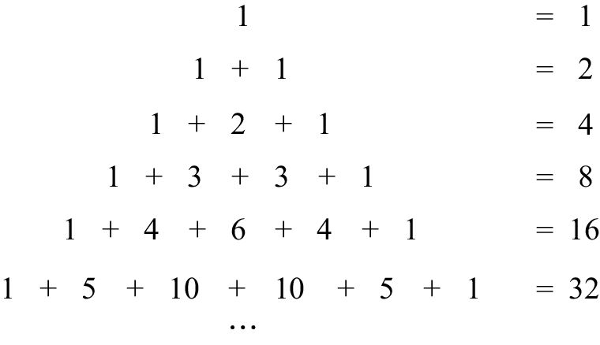
可以看出，各行数字之和全部是2的幂次方。具体地说，第n行的数字和是2n。为什么会这样呢？我们可以对这个规律换一种表述方式：第0行的和是1，之后每增加一行，和就会随之增加一倍。借助帕斯卡恒等式（我们刚才已经完成了它的证明），就能明白其中的道理。例如，在求第5行的和时，我们用第4行的数字来改写求和算式，就会得到：
1 + 5 + 10 + 10 + 5 + 1
= 1 + (1 + 4) + (4 + 6) + (6 + 4) + (4 + 1) + 1
= (1 + 1) + (4 + 4) + (6 + 6) + (4 + 4) + (1 + 1)
由此可见，第5行的数字之和正好是第4行数字之和的两倍。同理可证，和加倍的这条规律永远成立。
将其转换成二项式系数的形式，第n行的所有数字之和为：
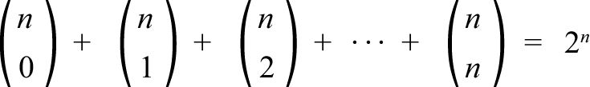
从各项本身来看，它们都可以表示成阶乘的形式，通常可以被多个不同的数整除，但是各项之和竟然只有一个底数2，这个结果真的令人意想不到。
这条规律还可以通过组合予以解释，我们把这个方法称为组合证明法。我们通过一家出售5种口味冰激凌的商店，来解释第5行的所有数字之和。（第n行的证明过程与之类似。）
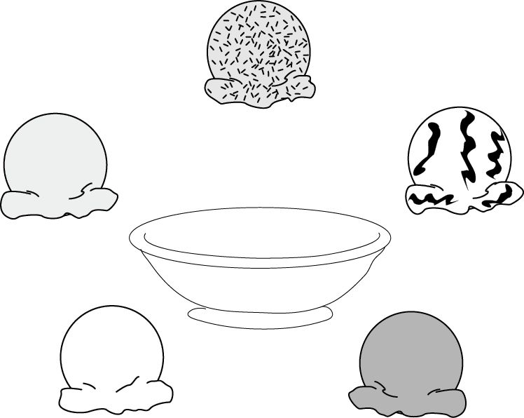
如果要求所选冰激凌口味各不相同，一共可以制成多少种圆筒呢？圆筒里可以放入1、2、3、4或5种口味的冰激凌，而且先后次序不重要。有2种口味的冰激凌有多少种？前文中说过，有
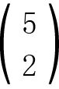
= 10种。根据所选口味的数量，圆筒冰激凌的总数为：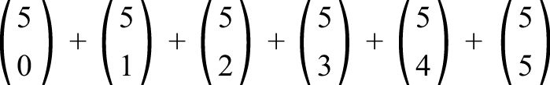
化简后是1 + 5 + 10 + 10 + 5 + 1。此外，我们也可以用乘法法则来回答这个问题。我们先不考虑圆筒中有几种口味的冰激凌，而是针对每种口味考虑是否把它放进圆筒里。例如，巧克力味的冰激凌有2种选择（放或不放），香草味有2种选择（放或不放），以这种方式考虑全部5种口味的情况。（注意，如果我们针对每种口味所做的选择都是“不放”，最终得到的将是一个空圆筒，但这个结果是允许出现的。）因此，我们一共可以做出的圆筒冰激凌数量是：
2×2×2×2×2 = 25
由于两种方法都是合乎逻辑的，因此：
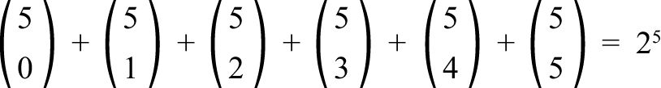
证明完毕。
通过类似的组合证明法可以发现，如果以间隔一个数的方式对第n行求和，得数是2n – 1。对于奇数行而言，这个规律很好理解。以第5行为例，1 + 10 + 5与被排除在外的5 + 10 + 1的得数一样，都等于所有数字之和2n 的1/2。对于偶数行而言，这个规律同样有效。以第4行为例，1 + 6 + 1 = 4 + 4 = 23。一般而言，对于任意的n≥1，都有：
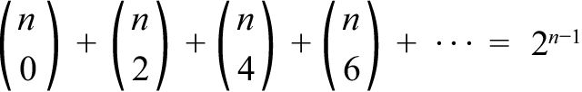
这是为什么呢？等式左边表示圆筒中的冰激凌口味数量是偶数（冰激凌共有n种且口味各不相同）。我们也可以通过在第1至第（n – 1）种口味的冰激凌中做选择的方式配制出这些冰激凌。第1种口味的冰激凌有2个选择（放或不放），第2种口味有2个选择……第（n – 1）种口味有2个选择。但是，要让圆筒中冰激凌的口味数量是偶数，最后一种口味只能有1个选择。因此，冰激凌口味为偶数的圆筒数量是2n – 1。
把帕斯卡三角形转化成直角三角形的形式，就可以发现更多的规律。最前面的一列（第0列）的各项都是1，紧随其后的一列（第1列）都是1、2、3、4等正整数。第2列的前几项是1、3、6、10、15…大家应该比较熟悉，这些都是我们在第1章里讨论过的三角形数。第2列的各个数字也可以写成:
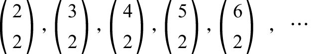
第k列的各项是
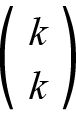
，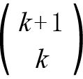
，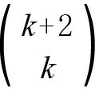
，…现在，我们把任意列的前几个数字（可多可少）相加，看看它们的和有什么特点。例如，如果我们把第2列的前5个数字相加，如下图所示：
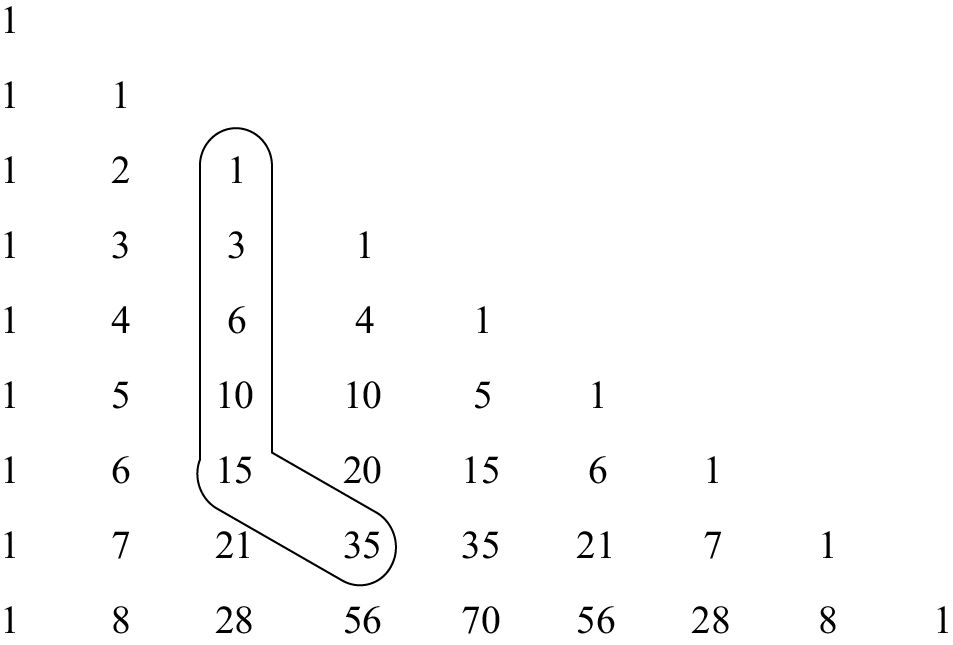
即1 + 3 + 6 + 10 + 15 = 35，得数正好是15的右下方的那个数字。换句话说：
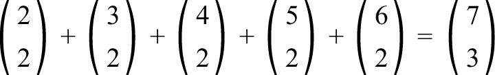
这是“曲棍球球棒恒等式”的一个实例。这个规律之所以被称作曲棍球球棒恒等式，是因为在帕斯卡直角三角形中，它表现为一个数字从一长列数字的末端伸出的形状，与曲棍球球棒十分相似。为了理解这个规律的成因，我们假设有一支由7人组成的曲棍球球队，每名球员的球衣上都有一个不同的号码，分别是1、2、3、4、5、6、7。我需要挑选其中3名球员去上一堂训练课，一共有多少种选择方案呢？由于次序不重要，因此共有
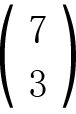
个方案。接下来，我们分几种情况来讨论这个问题。7号球员被选中的方案有多少种？在等效的前提下，这个问题可以变成：7是被选中的3个号码中最大的选择方案有多少种？由于7已经包含在内，另两名球员的选择方案有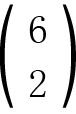
种。接下来，6是最大号码的选择方案有多少种？在这种情况下，6号是必选的，7号则不能选，因此剩下的2名球员有种选择方案。同理，5号、4号和3号为最大号码的选择方案分别有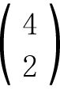
、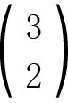
、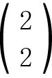
种。由于最大号码只能是3、4、5、6或7，因此我们已经考虑了所有可能的情况，也就是说，选择3名球员的方案共有 + + … +种，与上述等式的左边正好一样。因此，这个证明结果的一般表达式为：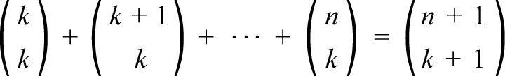
我们利用这个公式，来解决每个圣诞节都可能需要考虑的一个重要问题。歌曲《圣诞12天》中唱道，深深爱着你的人在第1天会送给你1份礼物（1只鹧鸪鸟），在第2天送给你3份礼物（1只鹧鸪鸟和2只斑鸠），在第3天送给你6份礼物（1只鹧鸪鸟、2只斑鸠和3只法国母鸡）……现在的问题是：12天后，你一共收到了多少份礼物？
在圣诞假期的第n天，你收到的礼物总数是：
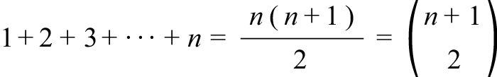
（利用三角形数的公式和k = 1时的曲棍球球棒恒等式可以得出上述结果。）因此，第1天你会收到 = 1份礼物，第2天你会收到 = 3份礼物，到了第12天，你会收到
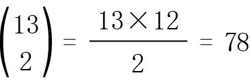
份礼物。利用曲棍球球棒恒等式，你收到的礼物总数是：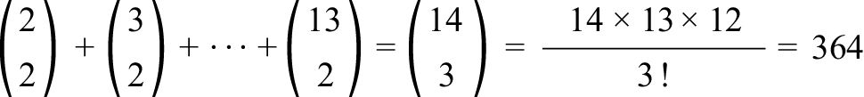
因此，如果你准备在明年把这些礼物分批送给自己，就意味着你每天都可以收到一件礼物（别忘了，生日那天你不需要给自己送礼物）！
给大家送上一首喜庆的歌——《圣诞假期的第n天》，庆祝这道题得出了美妙的答案。
圣诞假期的第n天，我的真爱送给我
n个新奇的小玩意儿
n – 1个好玩的东西
n – 2个有意思的礼物
……
数一数
n天以来
我一共收到多少份礼物？
正好是
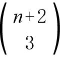
份。
接下来，我们讨论帕斯卡三角形的一个最奇怪的规律。我们把帕斯卡三角形里的奇数圈起来，仔细观察就会发现大三角形里还有小三角形。
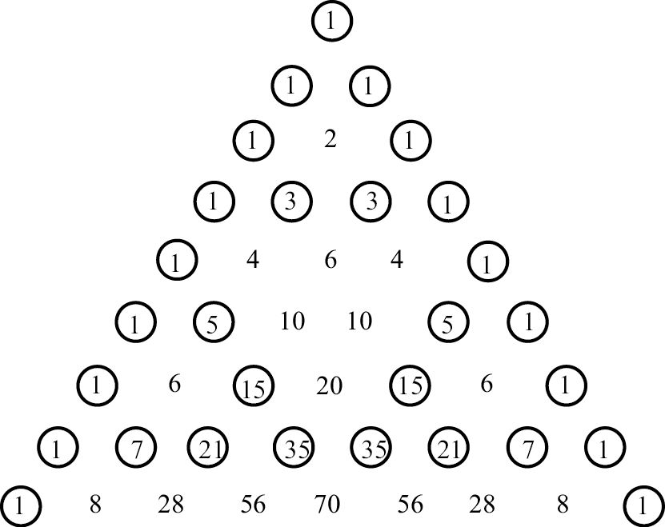
接下来，我们画一个更大的16行帕斯卡三角形，并把其中的奇数换成1，偶数换成0。仔细观察，就会发现每一对0和每一对1下面都是0。由此可见，两个偶数相加或者两个奇数相加，它们的和都是偶数。
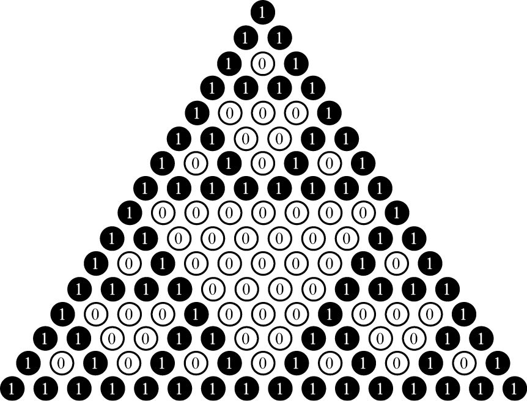
再接下来是一个更大的帕斯卡三角形。在这个256行的帕斯卡三角形里，所有奇数都构成了黑色三角形，所有偶数都构成了白色三角形。
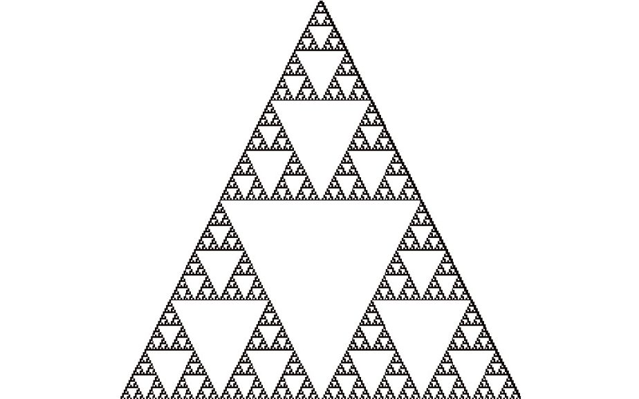
上幅图是谢尔宾斯基三角形（分形的一种）的近似图形。谢尔宾斯基三角形是隐藏在帕斯卡三角形中的众多宝藏之一。再给大家一个惊喜。帕斯卡三角形中，每行有多少个奇数？观察第1行至第8行（不含第0行），我们发现奇数的个数分别是2、2、4、2、4、4、8、2。尽管这些数都是2的幂次方，但似乎没有明显的规律。事实上，2的幂次方是一个重要的特点。例如，正好有2个奇数的行是第1、2、4、8行，这些数都是2的幂次方。为了找到一般性规律，我们需要利用一个事实：每个大于或等于0的整数都可以表示成2的幂次方之和的形式。例如：
1 = 1
2 = 2
3 = 2 + 1
4 = 4
5 = 4 + 1
6 = 4 + 2
7 = 4 + 2 + 1
8 = 8
第1、2、4、8（这些数字都是一个2的幂次方）行有2个奇数，第3、5、6（这些数字都是两个2的幂次方之和）行有4个奇数，第7（3个2的幂次方之和）行有8个奇数。下面，给大家介绍一个令人吃惊但是非常美丽的法则。如果n是p个2的幂次方之和，那么第n行中奇数的个数就是2p。例如，第83行有多少个奇数呢？由于83 = 64 + 16 + 2 + 1，即4个2的幂次方之和，因此第83行有24 = 16个奇数！
为了满足大家的好奇心，我告诉大家一个事实（但在这里就不提供证明过程了）：
k = 64a + 16b + 2c + d
只要a、b、c、d等于0或1，
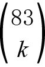
就是奇数。具体来说，k的值肯定是下面这些数字中的一个：0，1，2，3，16，17，18，19，64，65，66，69，80，81，82，83
在本章结束之前，我再给大家介绍最后一个规律。我们已经知道帕斯卡三角形各行之和的规律（2的幂次方）和各列之和的规律（曲棍球球棒），如果沿对角线方向求和呢？
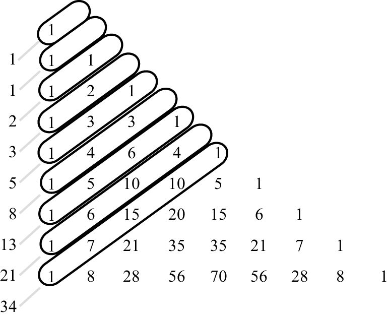
如上图所示，沿对角线方向求和时，我们得到的和是：
1，1，2，3，5，8，13，21，34
这些数字就是我们下一章将要讨论的内容：奇妙的斐波那契数列。